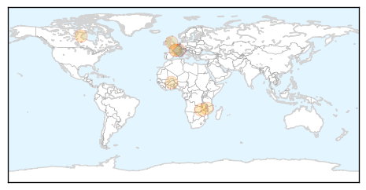
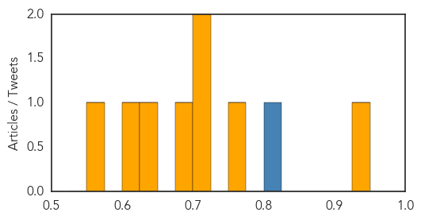
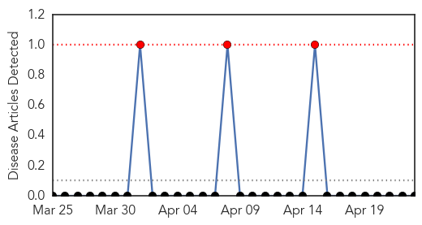
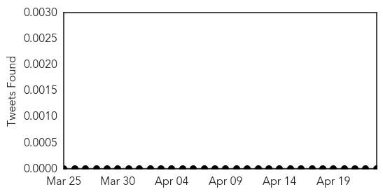

Meningitis
30-Day Web Trend
2 alerts, 0 warnings

30-Day Twitter Trend
1 alerts, 0 warnings

Article Locations
Article Confidences
Top Articles:
- 0.938
- Schools shut down to curb meningitis outbreak
- 0.767
- Malaria vaccine is a letdown but could still reduce cases
- 0.716
- GlaxoSmithKline : World's most advanced malaria vaccine is a disappointment but could still reduce cases
- 0.713
- WHO launches African Vaccination Week in Zambia - Zambia
- 0.679
- The Lancet: Scientists announce final trial results of the world's most advanced malaria vaccine
- 0.634
- Child malaria vaccine: Final trials bring hope
- 0.612
- AS01 Phase 3 Clinical Trial Results
- 0.555
- Malawi: MRF focuses on Action Meningitis on World Meningitis Day
Top Tweets:
- 0.806
- Vaccines can prevent diseases like: Measles Polio Tetanus Diphtheria Meningitis Yellow fever Hepatitis B TB Pneumonia VaccinesWork
Mumps
30-Day Web Trend
3 alerts, 0 warnings

30-Day Twitter Trend
0 alerts, 0 warnings

Article Locations

Article Confidences

Top Articles:
-
No articles found for Apr 23, 2015
Top Tweets:
-
No tweets found for Apr 23, 2015